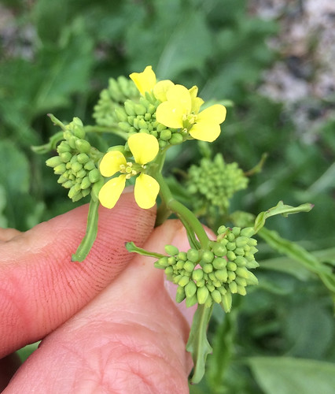
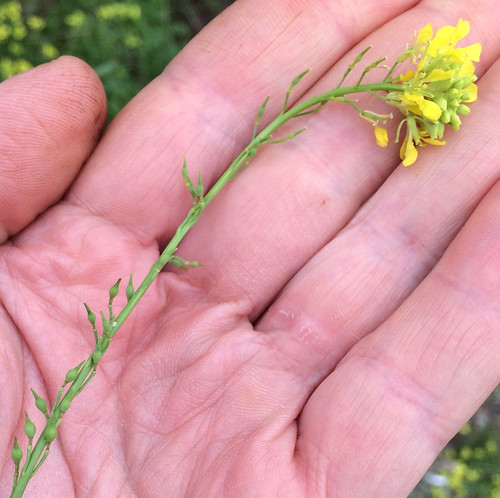

Scientific Name(s): Rapistrum rugosum
Abundance: invasive
What: young leaves, flower buds, flowers, young seedpods
How: raw, cooked
Where: sunny ditches, fields, disturbed areas
When: late fall, winter, spring, early summer
Nutritional Value: minerals, vitamin C, antioxidants
Dangers:
Close-up of flowers and flower buds.

Close-up of seedpods. Note the "beaks" extending from the tips of the pods away from the stem.

There's a yellow-flowered invader lining the roadsides and taking over fields of Texas and the rest of North America and it's name is Bastard Cabbage! Wow, that was a lot of "and"s in that previous sentence. Oh well. These plants prefer cool weather, fall through spring, during which time they're unfortunately everywhere. On the plus side, being a member of the brassica (mustard) family, pretty much all parts of this invader from southern Europe are edible.
Starting at the top and working our way down the plant, it's flowers have the standard mustard-family structure of four petals (yellow in this case) in an "X" arrangement surrounding six stamens, four of which are long and two stamens are short. The flowers grow in bunches off the stem and before they blow the highly-packed clusters look like tiny heads of broccoli, which is also a member of the mustard family. Below the flowers are seedpods arranged in a spiral up the stem. Note the "beak" jutting out from the top of the seedpod away from the stem.
The stem itself is somewhat hairy branched. The leaves at its base are large, broad, deeply lobed, and form a rosette whereas the leaves closer to the tops of the stems will be elongated, narrow, and unloved or very shallowly lobed. Underground, bastard cabbage forms a heavy taproot, similar to that of horseradish.
How do I eat this invasive species? The flowers and green seedpods I like raw straight off the plant or added to salads. The broccoli-like flower buds are also eaten raw or cooked like broccoli florets (drizzled with cheese!) The younger, tender leaves are cooked like turnip/collard greens, sautéing them with some garlic and bacon. The younger, tender parts of the stem do well when cooked/steamed like asparagus. I have yet to experiment with the roots but suspect a low-grade "horseradish" sauce could be made from them.